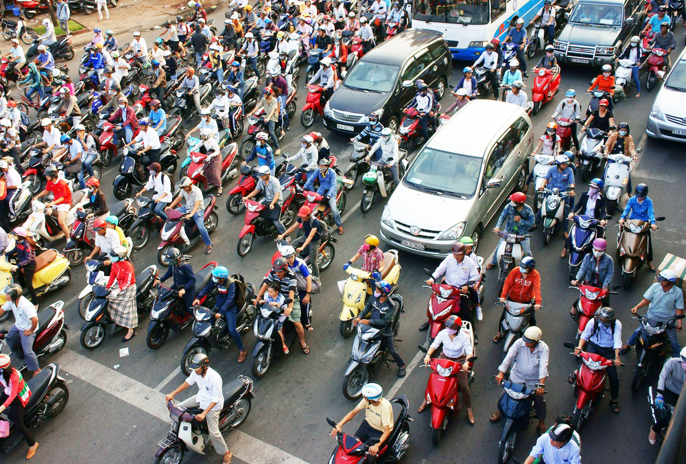
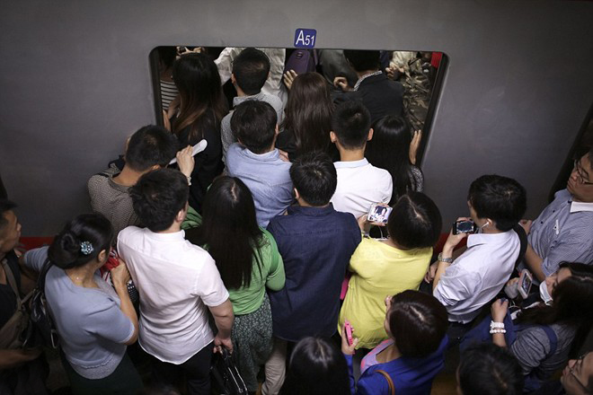
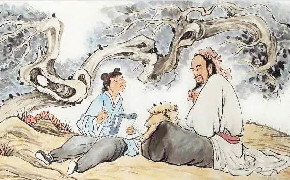

Có một thứ văn hóa mới đã hình thành và lan rộng ở Việt Nam, đi ngược lại với những lời dạy của sách Thánh hiền, ngược lại với truyền thống nhân văn tốt đẹp của người Việt thuần hậu thuở xưa. Không tin? Bạn có thể dừng lại và quan sát, nó hiện hữu ở khắp nơi, âm thầm nhưng cuồn cuộn chảy trong dòng chảy cuộc sống ngày càng hối hả.
Đó là một cách nghĩ, một thói quen, một “văn hóa” đáng lo ngại. Thứ văn hóa chỉ nghĩ đến mình mà không nghĩ đến lợi ích của người khác.
“Thời xưa đi học… Học đến sách Minh tâm thì nhớ câu: ‘Cái mà mình không muốn, thì đừng làm cho người khác’” – (Trích Hà Nội thanh lịch).
Đó là lời nhà văn hóa Hoàng Đạo Thúy chia sẻ trong cuốn sách cuối cùng của mình. Cái thời mà cụ nhắc đến đó cũng chỉ cách chúng ta khoảng 2 thế kỷ. Hơn 200 năm sao, những gì cổ nhân dạy đã được con cháu sáng tạo thành ngược lại hoàn toàn. Đó là làm gì cũng phải nghĩ đến bản thân trước tiên.
Hãy cùng chúng tôi trải nghiệm một ngày điển hình của một người dân bình thường, có thể bạn sẽ thấy những điều rất quen thuộc.
Hầu hết ai đi làm thì cũng phải tham gia giao thông. Đi trên đường vào buổi sáng, trong giờ cao điểm từ lâu đã là một cực hình của người dân các thành phố lớn. Người ta đi đường, phần lớn chỉ cần chen được vào đâu thì chen, không cần có làn đường gì hết, tắc quá thì chèo lên vỉa hè mà đi, cốt sao cho được việc mình.
Mà không biết thật sự có được việc không? Mấy giây, mấy phút nhanh hơn, cuối cùng lại làm đường tắc hơn. Số lượng người trèo lên vỉa hè đó, dù thế nào cũng sẽ phải trèo xuống lòng được ở một điểm nào đó, và điểm đó chính là điểm thắt nút giao thông. Họ thì đi được tắt hơn, nhưng lại đổ thêm vào cái nút tắc. “Mèo vẫn hoàn mèo”, thế là tắc thì vẫn cứ tắc thêm mà thôi.
Còn có những người lấn đường, tạt đầu, cướp đường, chen làn để đi cho nhanh, để lại một đống hỗn độn ùn tắc ở sau lưng mình và vút đi như một cơn gió. Cái văn hóa cho người khác “hít khói” chẳng phải là chỉ nghĩ tới mình thôi sao? Trên đường thời nay, ô tô ngày càng nhiều hơn, đường xá thì vẫn vậy, nên ô tô sẽ đi 2, 3, hay thậm chí 4, 5 làn đường mặc kệ xe máy muốn đi vào đâu thì đi. Thế nên đôi khi, không phải vì cố ý, xe máy lại phải lên vỉa hè.

Đi trên đường vào buổi sáng, trong giờ cao điểm từ lâu đã là một cực hình của người dân các thành phố lớn. (Ảnh: plo.vn)
Nên có người nói, thời buổi này, muốn làm người tử tế cũng không được. Thật ra vẫn được, có điều bạn sẽ phải hy sinh một chút lợi ích của mình mà thôi.
Vào tới công sở, ngay từ chỗ đỗ xe, bạn sẽ lại được gặp cái văn hóa kỳ dị kia. Ngay cạnh anh bảo vệ ghi vé thường có chiếc biển đủ to và thu hút đề dòng chữ “Đề nghị xuống xe, tắt máy”. Nhưng thỉnh thoảng lại có người vít ga đi qua để khỏi phải mất thời gian và sức lực dắt chiếc xe nặng nề. Đó không phải là những bà bầu nằm trong diện được miễn dắt xe, cũng chẳng phải các cụ già tuổi cao sức yếu. Thế nhưng họ chỉ cần vì tiện cho bản thân mà làm điều mình muốn thôi.
Thử tưởng tượng, bạn là anh bảo vệ ghi vé kia, cả ca trực phải đứng hít mùi khí thải từ các ống bô xe xả ra liên tục. Cái biển “Đề nghị xuống xe, tắt máy” không chỉ là để đảm bảo trật tự cho khu gửi xe. Cũng không phải chỉ là để đề phóng trường hợp kẻ gian trộm xe và phi thẳng ra ngoài khiến bảo vệ không kịp trở tay. Mà một phần nữa cũng là tránh cho những người làm việc ở đó phải hít khí thải quá nhiều, đặc biệt là ở những tầng hầm bí bức.
Dù có là để làm gì, thì khi chúng ta không thực hiện theo “đề nghị” đó cũng là đang không nghĩ tới người khác, những người làm việc ở khu gửi xe và chịu trách nhiệm về sự an toàn cho chính tài sản của chúng ta.
Vào tới thang máy, một cảnh tượng quen thuộc diễn ra hàng ngày lại được tái diễn. Đám đông đứng chờ thang vào giờ cao điểm bu kín lối vào. Cánh cửa thép bóng loáng vừa mở thì cũng là lúc người ở trong ùa ra, người ở ngoài ùa vào, không ai nhường ai, chen chúc, xô đẩy.
Có một anh nọ, làm cạnh phòng tôi, ngày nào tôi cũng gặp anh tại đó vào giờ đấy và ngày nào cũng thấy anh hô to: “Phải để người ở trong ra thì mình mới vào được chứ!”. Nhưng sau một thời gian, anh “hô to” không còn hô lên nữa, anh lủi thủi đứng nép vào một bên cửa thang, kiên nhẫn chờ đợi đoàn người, nếu còn chỗ chen vào được thì anh sẽ vào sau cùng, không thì đợi chuyến thang sau.

Chen lấn thang máy,cảnh tượng diễn ra hàng ngày ở nhiều nơi. (Ảnh: tne.vn)
Chiếc thang chật cứng luôn dừng lại ở rất nhiều tầng trước khi lên tới tầng trên cùng, nơi anh làm việc. Và bởi anh luôn đứng ngoài cùng, sát cánh cửa nên sẽ luôn bước hẳn ra ngoài thang, nhường đường cho người cần ra ở những tầng dưới. Nhưng cả chiếc thang cũng chỉ có một vài người như anh, đa phần người muốn ra sẽ phải luồn lách một hồi mới ra được tới cửa. Những người đứng chắn cửa như sợ bước ra khỏi thang nhường đường thì thang sẽ đi mất không bằng.
Chưa kể đến những việc nhỏ bé như không ấn nút chờ thang hộ người khác, vào trước thì đứng chắn luôn cái bảng điều khiển, nghe điện thoại và nói chuyện to trong không gian chật hẹp của thang máy… Tất cả cũng chỉ vì việc không nghĩ tới người khác mà khiến những việc bình thường như đi thang máy cũng thành mớ hỗn độn.
Vào được đến chỗ làm việc, dù là văn phòng của những người thuộc giới trí thức, vẫn sẽ luôn có những điều lặt vặt thể hiện nét văn hóa không nghĩ tới người khác đó. Linda là đồng nghiệp thuộc chi nhánh bên Singapore của công ty tôi thỉnh thoảng lại có dịp sang ngồi ở văn phòng chúng tôi một vài tuần. Đến lần thứ hai sang đây, cô ấy đã không thể kìm nén nổi mà “tâm sự” như trút nước khỏi bình với tôi.
“Người Việt Nam đều như vậy à? Tại sao họ lại chỉ nghĩ tới bản thân trong mọi việc như vậy? Họ lấy giấy trắng của công ty để in ấn bừa phứa những thứ phục vụ cá nhân, lấy cốc uống nước của người khác dùng rồi không trả lại vị trí cũ, vào nhà vệ sinh dùng hết giấy cũng không lấy thêm vào để lại cho người vào sau, làm ướt bồn cầu cũng không lau đi, uống chè xong thì đổ bã vào bồn rửa khiến tắc cả nước, đi trước mở cửa thì không giữ cửa cho người sau mà buông để nó xô mạnh vào họ…” Có rất nhiều những điều vụn vặt mà Linda kể ra nhưng tôi không thể nhớ hết nổi, có lẽ bởi cái sự “muối mặt” lúc đó đã che hết chỗ để ghi nhớ trong cái đầu nhỏ bé của tôi.
Tôi cũng chỉ có thể cười trừ và nhún vai thỏ thẻ rằng: “Chúng tôi cũng tội nghiệp mà!”. Có lẽ Linda không hiểu câu trả lời của tôi, nhưng có thể nhiều lần tới sang đây, cô ấy sẽ hiểu.
Tôi thì vì “tâm sự” của Linda, cũng đã nhìn lại mình. Tôi và em gái cũng hay hát karaoke rất to vào những tối cuối tuần đầy hưng phấn, mặc dù cửa nhà không hề có cách âm và hàng xóm thì ở ngay sát vách. Cây cối trồng trong nhà tôi vươn sang nhà hàng xóm và rụng lá đầy sân nhà họ khiến họ phải dọn dẹp tối ngày. Đi siêu thị, chọn mua đồ thì bới tung lên, khiến những mớ rau bị dập nát.
Rất nhiều người đi siêu thị mua đồ bới tung lên làm hàng hóa bị dập nát.(Ảnh: tuoitre.vn)
Đi ăn buffet thì món nào thích sẽ lấy thật nhiều, không ăn hết lại để thừa, lãng phí, trong khi nhiều người đến sau không còn đồ để ăn. Đi ăn cưới thì cắm đầu ăn uống, chẳng thèm chúc phúc, lắng nghe đôi lời của chủ nhà… Rất nhiều việc tưởng chừng bình thường, nhưng đối với thế giới văn minh thì nó chẳng hề bình thường chút nào. Và tất cả nó đều có chung một nguyên lý, là bởi tôi không nghĩ tới người khác trước khi nghĩ tới mình.
“Người không vì mình, Trời tru Đất diệt” – (Nhân bất vi kỷ, thiên trụ địa diệt), câu nói đùa không biết từ lúc nào đã trở thành một câu nhắc nhở, chi phối hành động, suy nghĩ của con người. Nguồn gốc ban đầu của câu đó là “Người không tu mình, Trời tru Đất diệt”. Bởi chữ “Vi” có nghĩa là “tu dưỡng”. Chẳng có bậc Thánh hiền nào lại dậy con người ta sống chỉ vì mình như vậy. Nếu ai cũng vì mình, thì ai cũng sẽ không ngần ngại mà chà đạp lên quyền lợi của người khác, giành giật, chiếm đoạt lợi ích, vậy thì xã hội sao có thể không loạn đây?
Xưa kia, khi Trọng Cung hỏi thế nào là Nhân thì Khổng Tử đã trả lời: “Kỷ sở bất dục, vật thi ư nhân – Điều gì mình không muốn thì đừng làm cho người khác” (Luận ngữ). Nhân được coi là điều cao nhất của luân lý, đạo đức, Khổng Tử cũng nói: “Người không có Nhân thì Lễ mà làm gì? Người không có Nhân thì Nhạc mà làm gì?” (Luận ngữ).
Luật Vàng trong cách hành xử được miêu tả qua những lời của Chúa Jesus trong Bài giảng trên núi: “Mọi điều anh em muốn người ta làm cho mình thì anh em cũng phải làm cho họ. Đó là cốt lõi của Luật pháp và sách của các tiên tri” (Mat 7:12).

Khổng Tử nói: “Điều gì không muốn thì đừng làm cho người khác”. (Ảnh: kknews.cc)
Các tôn giáo chính thống cũng đều khuyên răn con người ta hướng Thiện. Biểu hiện của Thiện ấy, chính là luôn nghĩ tới lợi ích của người khác trước khi nghĩ tới mình.
Vậy thì để thành Nhân, trước hết phải có Thiện, phải biết nghĩ tới người khác, nếu không thì dù bạn giỏi giang đến mấy, thành đạt đến mấy cũng không được gọi là thành Nhân, cũng không xứng làm một con người, chứ đừng nói là làm người tử tế, tài ba.
Văn hóa không nghĩ tới người khác, do đó, nó sẽ luôn là vật cản, ngăn trở con người hoàn thiện bản thân, phát triển xã hội bền vững, thịnh vượng. Nếu ai cũng chỉ nghĩ đến mình, xã hội sẽ không khác gì một vườn thú, cạnh tranh, sinh tồn và đầy hỗn loạn. Bạn trách cứ người khác, lên án thực trạng xã hội, bạn lo lắng cho tương lai của con cái mình, thế nhưng mọi người ai cũng có góp chút sóng mà thành bão.
Ai cũng thử lắng lại, nhìn lại bản thân, nhìn lại từng hành động nhỏ bé mình làm hàng ngày, có thể sẽ đều biết mình phải bắt đầu nắn chỉnh thứ văn hóa biến dị kia từ đâu. Chính từ bản thân chúng ta, từ nhưng việc nhỏ nhất. Hãy bắt đầu, bạn sẽ không phải hối tiếc!